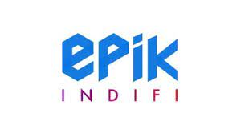
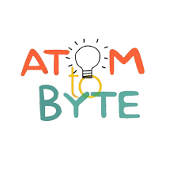

Experienced SDE Intern with Quinbay, successfully enhancing user identification for the B2B travel domain.
Acknowledged for optimizing coupon microservices, collaborating globally, and executing production code.
Trainee at EPIKIndifi, independently designing a Library Management System and leveraging ML for strategic insights.
Work Experience
Quinbay Technology
SDE INTERN | Quinbay Technology, Bangalore, Karnataka July 2022–January 2023
Ideated, developed, and optimized the user identification feature for the B2B travel domain with an accuracy of 96%, impacting 80+ corporate giants in Indonesia
Analyzed coupons and voucher microservices, making redemption easy and reducing load time by 64% through feigning calls, by redesigning of business logic
Collaborated with 10+ senior developers across the globe and the QA team on production-related issues. Appreciated by the team lead for production code execution
Designed 1000+ robust test case scenarios and wrote 5k+ lines of code working in production, along with performing DB migration
Saved 300+ man-hours/week (100% efficiency). Built online refund transaction system for flights, trains, and railway bookings.
EPIKIndifi 
TRAINEE | EPIKIndifi, Chennai, Tamil Nadu
Led the independent design of a robust logic system for a Library Management System, tailored to cater to the needs of 500 users
Analyzed extensive datasets comprising over 4000+ data points. Employed ML techniques to extract valuable insights
Provided strategic recommendations to elevate employee performance, translating to a 24% increase in overall profitability
Developed front-end design for the Library Management System, using HTML and CSS to enhance user interface and interaction.
AtomToByte 
HEAD OF TECHNICAL TEAM | AtomToByte, India July 2020 - Present
Assisted in Project Saksham during the COVID pandemic, provided medical assistance, and collaborated with 10+ doctors for immediate response touching 1000+ lives
Established Project ALFAAZ unscripted with 10+ members, a 5-star-rated Spotify podcast and YouTube channel fostering discussions on pertinent topics among 10,000+ teenagers and raising awareness
Directed app development team to deliver a seamless and all-encompassing user experience for Project ATB learning
Generated donations of 400+ clothes , 2000+ books and raised 50,000+ rupees for underprivileged children
Academic Achievements
Achieved an international rank of 504 in the International Mathematics Olympiad (IMO) 2012–13.
Secured the top 2 grades, O (10/10) and E (9/10), in 54/60 courses offered at KIIT University
Awarded for scoring perfect and having the highest CGPA of 10 in class X
Ranked 25th on GeeksForGeeks at KIIT University
Achieved Regional (East Zone) 3rd Runner-Up in the National Safety Science Quiz-2018, conducted by national TV
Facilitated as Scholar for 5 consecutive yrs. 6-10 among 250+ students for outstanding academic and co-curricular performance
Received a certificate for outstanding performance in National Financial Literacy Assessment in 2015
EXTRA-CURRICULAR ACHIEVEMENTS
Led a team of 3 to win 1st position among 40+ competing teams in the district quiz organized by the Indian Postal Service.
Represented the school's photography department at the Annual environment festival in 2017
Certified NSQF skill level 2 by CBSE in Information Technology in 2016–2017
Led a team of 10 players and secured 2nd position in the basketball competition under 14 Boys in 2014–2015
Secured 2nd position in table tennis (doubles) competition in 2013–2014
Secured 2nd position in the NetBall competition in 2010–2011
Achieved 40k+ answer views on Quora with multiple answers on mobile technology and current trends
Selected for Ideation and proposing shipping solution for Pitney Bowes Hackathon